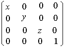

title: glScaled function (Gl.h) description: The glScaled and glScalef functions multiply the current matrix by a general scaling matrix. | glScaled function (Gl.h) ms.assetid: 3846289f-5c7b-4bb6-95a8-90a58dd8b9d9 keywords:
The glScaled and glScalef functions multiply the current matrix by a general scaling matrix.
void WINAPI glScaled(
GLdouble x,
GLdouble y,
GLdouble z
);
x
Scale factors along the x axis.
y
Scale factors along the y axis.
z
Scale factors along the z axis.
This function does not return a value.
The following error code can be retrieved by the glGetError function.
| Name | Meaning |
|---|---|
| GL_INVALID_OPERATION | The function was called between a call to glBegin and the corresponding call to glEnd. |
The glScaled function produces a general scaling along the x, y, and z axes. The three arguments indicate the desired scale factors along each of the three axes. The resulting matrix is

The current matrix (see glMatrixMode) is multiplied by this scale matrix, with the product replacing the current matrix. That is, if M is the current matrix and S is the scale matrix, then M is replaced with M S.
If the matrix mode is either GL_MODELVIEW or GL_PROJECTION, all objects drawn after glScaled is called are scaled. Use glPushMatrix and glPopMatrix to save and restore the unscaled coordinate system.
If scale factors other than 1.0 are applied to the modelview matrix and lighting is enabled, automatic normalization of normals should probably also be enabled (glEnable and glDisable with argument GL_NORMALIZE).
The following functions retrieve information related to glScaled:
glGet with argument GL_MATRIX_MODE
glGet with argument GL_MODELVIEW_MATRIX
glGet with argument GL_PROJECTION_MATRIX
glGet with argument GL_TEXTURE_MATRIX
| Requirement | Value |
|---|---|
| Minimum supported client | Windows 2000 Professional [desktop apps only] |
| Minimum supported server | Windows 2000 Server [desktop apps only] |
| Header | Gl.h |
| Library | Opengl32.lib |
| DLL | Opengl32.dll |